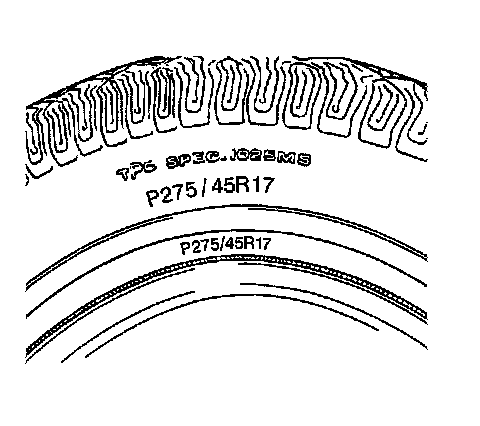

All Seasons Tires Description
All Seasons Tires Description

Most GM vehicles are equipped with steel belted all-season radial tires as standard equipment. These tires qualify as snow tires, with a higher than average rating for snow traction than the non-all season radial tires previously used. Other performance areas, such as wet traction, rolling resistance, tread life, and air retention, are also improved. This is done by improvements in both tread design and tread compounds. These tires are identified by an M + S molded in the tire side wall after the tire size. The suffix MS is also molded in the tire side wall after the TPC specification number.
The optional handling tires used on some vehicles now also have the MS marking after the tire size and the TPC specification number.